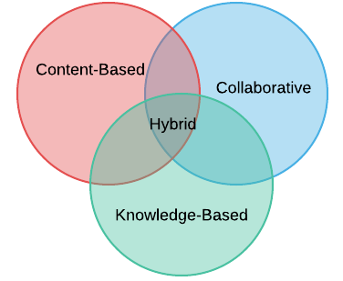

Google Rec Systems
Table Of Contents:
- Introduction
- Architecture
- Technology Stack
- Bonus Resources
Introduction
A good recommendation system helps user to find useful item from a large collection. Two common use cases can be:
- Quickly find related content : Recommend based on the item the user is currently looking at. When you are looking at an item to buy, Amazon.com might recommend similar items for the user to buy or compare.[Content Based]
- Suggest items based on other users history: Recommed other items based on similar purchages in the past from other users. [Collaborative]
Features For Common Types Of Recommendations:
- Content-Based
- Metadata of the User (Cluster Similar Users)
- Metadata of the Article (Cluster Similar Articles)
- Collaborative Filtering
- History of Articles read by the User
- History of Users who viewed an Article
- Knowledge-Based
- Explicitly ask for User preferences
- Deep Neural Network
- Recommend based on (User’s history of Articles (LSTM) + Article’s metadata)[RNN]

Architecture
Technology Stack
Bonus Tutorials
- Tensorflow Serving on Sagemaker
- Query CSV or JSON file stored in S3 using Glue and Athena
comments powered by